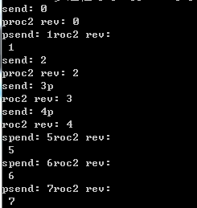

Python多进程编程
序. multiprocessing
python中的多线程其实并不是真正的多线程，如果想要充分地使用多核CPU的资源，在python中大部分情况需要使用多进程。Python提供了非常好用的多进程包multiprocessing，只需要定义一个函数，Python会完成其他所有事情。借助这个包，可以轻松完成从单进程到并发执行的转换。multiprocessing支持子进程、通信和共享数据、执行不同形式的同步，提供了Process、Queue、Pipe、Lock等组件。
1. Process
创建进程的类：Process([group [, target [, name [, args [, kwargs]]]]])，target表示调用对象，args表示调用对象的位置参数元组。kwargs表示调用对象的字典。name为别名。group实质上不使用。
方法：is_alive()、join([timeout])、run()、start()、terminate()。其中，Process以start()启动某个进程。
属性：authkey、daemon（要通过start()设置）、exitcode(进程在运行时为None、如果为–N，表示被信号N结束）、name、pid。其中daemon是父进程终止后自动终止，且自己不能产生新进程，必须在start()之前设置。
例1.1：创建函数并将其作为单个进程

import multiprocessing import time def worker(interval): n = 5 while n > 0: print("The time is {0}".format(time.ctime())) time.sleep(interval) n -= 1 if __name__ == "__main__": p = multiprocessing.Process(target = worker, args = (3,)) p.start() print "p.pid:", p.pid print "p.name:", p.name print "p.is_alive:", p.is_alive()
结果
1 2 3 4 5 6 7 8 | p.pid: 8736p.name: Process-1p.is_alive: TrueThe time is Tue Apr 21 20:55:12 2015The time is Tue Apr 21 20:55:15 2015The time is Tue Apr 21 20:55:18 2015The time is Tue Apr 21 20:55:21 2015The time is Tue Apr 21 20:55:24 2015 |
例1.2：创建函数并将其作为多个进程
import multiprocessing import time def worker_1(interval): print "worker_1" time.sleep(interval) print "end worker_1" def worker_2(interval): print "worker_2" time.sleep(interval) print "end worker_2" def worker_3(interval): print "worker_3" time.sleep(interval) print "end worker_3" if __name__ == "__main__": p1 = multiprocessing.Process(target = worker_1, args = (2,)) p2 = multiprocessing.Process(target = worker_2, args = (3,)) p3 = multiprocessing.Process(target = worker_3, args = (4,)) p1.start() p2.start() p3.start() print("The number of CPU is:" + str(multiprocessing.cpu_count())) for p in multiprocessing.active_children(): print("child p.name:" + p.name + "\tp.id" + str(p.pid)) print "END!!!!!!!!!!!!!!!!!"
结果
1 2 3 4 5 6 7 8 9 10 11 | The number of CPU is:4child p.name:Process-3 p.id7992child p.name:Process-2 p.id4204child p.name:Process-1 p.id6380END!!!!!!!!!!!!!!!!!worker_1worker_3worker_2end worker_1end worker_2end worker_3 |
例1.3：将进程定义为类
import multiprocessing import time class ClockProcess(multiprocessing.Process): def __init__(self, interval): multiprocessing.Process.__init__(self) self.interval = interval def run(self): n = 5 while n > 0: print("the time is {0}".format(time.ctime())) time.sleep(self.interval) n -= 1 if __name__ == '__main__': p = ClockProcess(3) p.start()
注：进程p调用start()时，自动调用run()
结果
1 2 3 4 5 | the time is Tue Apr 21 20:31:30 2015the time is Tue Apr 21 20:31:33 2015the time is Tue Apr 21 20:31:36 2015the time is Tue Apr 21 20:31:39 2015the time is Tue Apr 21 20:31:42 2015 |
例1.4：daemon程序对比结果
#1.4-1 不加daemon属性
import multiprocessing import time def worker(interval): print("work start:{0}".format(time.ctime())); time.sleep(interval) print("work end:{0}".format(time.ctime())); if __name__ == "__main__": p = multiprocessing.Process(target = worker, args = (3,)) p.start() print "end!"
结果
1 2 3 | end!work start:Tue Apr 21 21:29:10 2015work end:Tue Apr 21 21:29:13 2015 |
#1.4-2 加上daemon属性
import multiprocessing import time def worker(interval): print("work start:{0}".format(time.ctime())); time.sleep(interval) print("work end:{0}".format(time.ctime())); if __name__ == "__main__": p = multiprocessing.Process(target = worker, args = (3,)) p.daemon = True p.start() print "end!"
结果
1 | end! |
注：因子进程设置了daemon属性，主进程结束，它们就随着结束了。
#1.4-3 设置daemon执行完结束的方法
import multiprocessing import time def worker(interval): print("work start:{0}".format(time.ctime())); time.sleep(interval) print("work end:{0}".format(time.ctime())); if __name__ == "__main__": p = multiprocessing.Process(target = worker, args = (3,)) p.daemon = True p.start() p.join() print "end!"
结果
1 2 3 | work start:Tue Apr 21 22:16:32 2015work end:Tue Apr 21 22:16:35 2015end! |
2. Lock
当多个进程需要访问共享资源的时候，Lock可以用来避免访问的冲突。
import multiprocessing import sys def worker_with(lock, f): with lock: fs = open(f, 'a+') n = 10 while n > 1: fs.write("Lockd acquired via with\n") n -= 1 fs.close() def worker_no_with(lock, f): lock.acquire() try: fs = open(f, 'a+') n = 10 while n > 1: fs.write("Lock acquired directly\n") n -= 1 fs.close() finally: lock.release() if __name__ == "__main__": lock = multiprocessing.Lock() f = "file.txt" w = multiprocessing.Process(target = worker_with, args=(lock, f)) nw = multiprocessing.Process(target = worker_no_with, args=(lock, f)) w.start() nw.start() print "end"
结果（输出文件）
1 2 3 4 5 6 7 8 9 10 11 12 13 14 15 16 17 18 | Lockd acquired via withLockd acquired via withLockd acquired via withLockd acquired via withLockd acquired via withLockd acquired via withLockd acquired via withLockd acquired via withLockd acquired via withLock acquired directlyLock acquired directlyLock acquired directlyLock acquired directlyLock acquired directlyLock acquired directlyLock acquired directlyLock acquired directlyLock acquired directly |
3. Semaphore
Semaphore用来控制对共享资源的访问数量，例如池的最大连接数。
import multiprocessing import time def worker(s, i): s.acquire() print(multiprocessing.current_process().name + "acquire"); time.sleep(i) print(multiprocessing.current_process().name + "release\n"); s.release() if __name__ == "__main__": s = multiprocessing.Semaphore(2) for i in range(5): p = multiprocessing.Process(target = worker, args=(s, i*2)) p.start()
结果
1 2 3 4 5 6 7 8 9 10 11 12 13 14 | Process-1acquireProcess-1releaseProcess-2acquireProcess-3acquireProcess-2releaseProcess-5acquireProcess-3releaseProcess-4acquireProcess-5releaseProcess-4release |
4. Event
Event用来实现进程间同步通信。
import multiprocessing import time def wait_for_event(e): print("wait_for_event: starting") e.wait() print("wairt_for_event: e.is_set()->" + str(e.is_set())) def wait_for_event_timeout(e, t): print("wait_for_event_timeout:starting") e.wait(t) print("wait_for_event_timeout:e.is_set->" + str(e.is_set())) if __name__ == "__main__": e = multiprocessing.Event() w1 = multiprocessing.Process(name = "block", target = wait_for_event, args = (e,)) w2 = multiprocessing.Process(name = "non-block", target = wait_for_event_timeout, args = (e, 2)) w1.start() w2.start() time.sleep(3) e.set() print("main: event is set")
结果
1 2 3 4 5 | wait_for_event: startingwait_for_event_timeout:startingwait_for_event_timeout:e.is_set->Falsemain: event is setwairt_for_event: e.is_set()->True |
5. Queue
import multiprocessing def writer_proc(q): try: q.put(1, block = False) except: pass def reader_proc(q): try: print q.get(block = False) except: pass if __name__ == "__main__": q = multiprocessing.Queue() writer = multiprocessing.Process(target=writer_proc, args=(q,)) writer.start() reader = multiprocessing.Process(target=reader_proc, args=(q,)) reader.start() reader.join() writer.join()
结果
1 | 1 |
6. Pipe
import multiprocessing import time def proc1(pipe): while True: for i in xrange(10000): print "send: %s" %(i) pipe.send(i) time.sleep(1) def proc2(pipe): while True: print "proc2 rev:", pipe.recv() time.sleep(1) def proc3(pipe): while True: print "PROC3 rev:", pipe.recv() time.sleep(1) if __name__ == "__main__": pipe = multiprocessing.Pipe() p1 = multiprocessing.Process(target=proc1, args=(pipe[0],)) p2 = multiprocessing.Process(target=proc2, args=(pipe[1],)) #p3 = multiprocessing.Process(target=proc3, args=(pipe[1],)) p1.start() p2.start() #p3.start() p1.join() p2.join() #p3.join()
结果

7. Pool
在利用Python进行系统管理的时候，特别是同时操作多个文件目录，或者远程控制多台主机，并行操作可以节约大量的时间。当被操作对象数目不大时，可以直接利用multiprocessing中的Process动态成生多个进程，十几个还好，但如果是上百个，上千个目标，手动的去限制进程数量却又太过繁琐，此时可以发挥进程池的功效。
Pool可以提供指定数量的进程，供用户调用，当有新的请求提交到pool中时，如果池还没有满，那么就会创建一个新的进程用来执行该请求；但如果池中的进程数已经达到规定最大值，那么该请求就会等待，直到池中有进程结束，才会创建新的进程来它。
例7.1：使用进程池（非阻塞）
#coding: utf-8 import multiprocessing import time def func(msg): print "msg:", msg time.sleep(3) print "end" if __name__ == "__main__": pool = multiprocessing.Pool(processes = 3) for i in xrange(4): msg = "hello %d" %(i) pool.apply_async(func, (msg, )) #维持执行的进程总数为processes，当一个进程执行完毕后会添加新的进程进去 print "Mark~ Mark~ Mark~~~~~~~~~~~~~~~~~~~~~~" pool.close() pool.join() #调用join之前，先调用close函数，否则会出错。执行完close后不会有新的进程加入到pool,join函数等待所有子进程结束 print "Sub-process(es) done."
一次执行结果
1 2 3 4 5 6 7 8 9 10 | mMsg: hark~ Mark~ Mark~~~~~~~~~~~~~~~~~~~~~~ello 0msg: hello 1msg: hello 2endmsg: hello 3endendendSub-process(es) done. |
函数解释：
- apply_async(func[, args[, kwds[, callback]]]) 它是非阻塞，apply(func[, args[, kwds]])是阻塞的（理解区别，看例1例2结果区别）
- close() 关闭pool，使其不在接受新的任务。
- terminate() 结束工作进程，不在处理未完成的任务。
- join() 主进程阻塞，等待子进程的退出， join方法要在close或terminate之后使用。
执行说明：创建一个进程池pool，并设定进程的数量为3，xrange(4)会相继产生四个对象[0, 1, 2, 4]，四个对象被提交到pool中，因pool指定进程数为3，所以0、1、2会直接送到进程中执行，当其中一个执行完事后才空出一个进程处理对象3，所以会出现输出“msg: hello 3”出现在"end"后。因为为非阻塞，主函数会自己执行自个的，不搭理进程的执行，所以运行完for循环后直接输出“mMsg: hark~ Mark~ Mark~~~~~~~~~~~~~~~~~~~~~~”，主程序在pool.join（）处等待各个进程的结束。
例7.2：使用进程池（阻塞）
#coding: utf-8 import multiprocessing import time def func(msg): print "msg:", msg time.sleep(3) print "end" if __name__ == "__main__": pool = multiprocessing.Pool(processes = 3) for i in xrange(4): msg = "hello %d" %(i) pool.apply(func, (msg, )) #维持执行的进程总数为processes，当一个进程执行完毕后会添加新的进程进去 print "Mark~ Mark~ Mark~~~~~~~~~~~~~~~~~~~~~~" pool.close() pool.join() #调用join之前，先调用close函数，否则会出错。执行完close后不会有新的进程加入到pool,join函数等待所有子进程结束 print "Sub-process(es) done."
一次执行的结果
1 2 3 4 5 6 7 8 9 10 | msg: hello 0endmsg: hello 1endmsg: hello 2endmsg: hello 3endMark~ Mark~ Mark~~~~~~~~~~~~~~~~~~~~~~Sub-process(es) done. |
例7.3：使用进程池，并关注结果
import multiprocessing import time def func(msg): print "msg:", msg time.sleep(3) print "end" return "done" + msg if __name__ == "__main__": pool = multiprocessing.Pool(processes=4) result = [] for i in xrange(3): msg = "hello %d" %(i) result.append(pool.apply_async(func, (msg, ))) pool.close() pool.join() for res in result: print ":::", res.get() print "Sub-process(es) done."
一次执行结果
1 2 3 4 5 6 7 8 9 10 | msg: hello 0msg: hello 1msg: hello 2endendend::: donehello 0::: donehello 1::: donehello 2Sub-process(es) done. |
例7.4：使用多个进程池
#coding: utf-8 import multiprocessing import os, time, random def Lee(): print "\nRun task Lee-%s" %(os.getpid()) #os.getpid()获取当前的进程的ID start = time.time() time.sleep(random.random() * 10) #random.random()随机生成0-1之间的小数 end = time.time() print 'Task Lee, runs %0.2f seconds.' %(end - start) def Marlon(): print "\nRun task Marlon-%s" %(os.getpid()) start = time.time() time.sleep(random.random() * 40) end=time.time() print 'Task Marlon runs %0.2f seconds.' %(end - start) def Allen(): print "\nRun task Allen-%s" %(os.getpid()) start = time.time() time.sleep(random.random() * 30) end = time.time() print 'Task Allen runs %0.2f seconds.' %(end - start) def Frank(): print "\nRun task Frank-%s" %(os.getpid()) start = time.time() time.sleep(random.random() * 20) end = time.time() print 'Task Frank runs %0.2f seconds.' %(end - start) if __name__=='__main__': function_list= [Lee, Marlon, Allen, Frank] print "parent process %s" %(os.getpid()) pool=multiprocessing.Pool(4) for func in function_list: pool.apply_async(func) #Pool执行函数，apply执行函数,当有一个进程执行完毕后，会添加一个新的进程到pool中 print 'Waiting for all subprocesses done...' pool.close() pool.join() #调用join之前，一定要先调用close() 函数，否则会出错, close()执行后不会有新的进程加入到pool,join函数等待素有子进程结束 print 'All subprocesses done.'
一次执行结果
1 2 3 4 5 6 7 8 9 10 11 12 13 14 15 | parent process 7704Waiting for all subprocesses done...Run task Lee-6948Run task Marlon-2896Run task Allen-7304Run task Frank-3052Task Lee, runs 1.59 seconds.Task Marlon runs 8.48 seconds.Task Frank runs 15.68 seconds.Task Allen runs 18.08 seconds.All subprocesses done. |